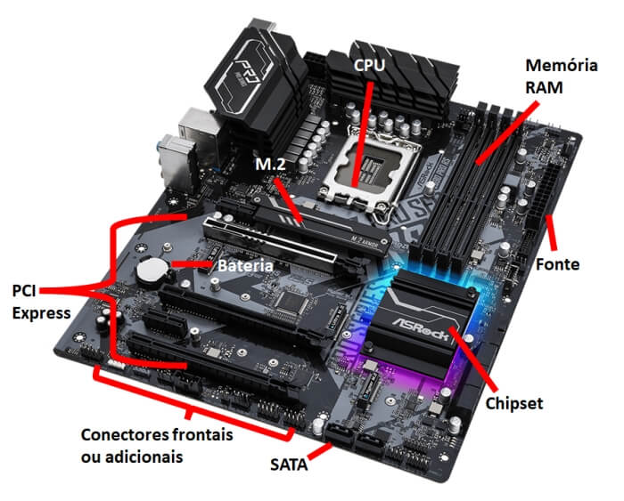

Hardware é um assunto que eu gosto bastante. Nesta página eu explico quais são as peças principais de um computador e como é feita a montagem.
Por que montar o próprio PC?
Quando você monta o próprio computador, você escolhe cada peça de acordo com o que vai usar e com quanto pode gastar. Quem joga pode investir mais na placa de vídeo, e quem usa programas pesados pode investir mais no processador e na memória.
Outra vantagem é o upgrade. Em vez de trocar o computador inteiro, dá para trocar só uma peça, como a placa de vídeo, e vender a peça antiga.
🔧 As peças principais
Um PC de mesa é formado basicamente por estas peças:
Processador (CPU): executa as instruções dos programas, é o "cérebro" do computador.
Placa-mãe: liga todas as peças entre si. O processador, a memória e o SSD ficam ligados nela.
Memória RAM: guarda os dados dos programas que estão abertos. Quando o PC desliga, ela é apagada.
Placa de vídeo (GPU): processa as imagens. É uma das peças mais importantes para quem joga.
SSD ou HD: guarda o sistema operacional e os arquivos, mesmo com o PC desligado. O SSD é bem mais rápido que o HD.
Fonte: transforma a energia da tomada em uma energia que as peças conseguem usar.
Gabinete: é a "caixa" onde todas as peças ficam montadas.

📋 Passo a passo da montagem
Essa é uma ordem bem comum, mas ela pode mudar um pouco dependendo do gabinete e do cooler. Por isso, vale sempre olhar o manual da placa-mãe.
Separar as peças e uma chave Phillips em uma mesa limpa e tomar cuidado com a eletricidade estática (por exemplo, não montar em cima de tapete).
Encaixar o processador no soquete da placa-mãe, alinhando o triângulo do canto do processador com a marcação do soquete.
Instalar o cooler em cima do processador (com pasta térmica, se o cooler não vier com ela já aplicada).
Encaixar os pentes de memória RAM nos slots que o manual da placa-mãe indica.
Encaixar e prender o SSD M.2 na placa-mãe.
Colocar a placa-mãe dentro do gabinete e parafusar.
Instalar a fonte e ligar os cabos dela na placa-mãe (o de 24 pinos e o de energia do processador).
Ligar os cabos do painel frontal do gabinete (botão de ligar, USB e som) na placa-mãe, seguindo o manual.
Encaixar a placa de vídeo no slot PCI Express e ligar o cabo de energia dela, se ela precisar.
Ligar o PC, entrar na BIOS para ver se todas as peças foram reconhecidas e depois instalar o sistema operacional.
🎮 O meu PC atual
Estas são as principais peças do PC que eu uso hoje para jogar:
Processador: AMD Ryzen 7 9800X3D
Placa de vídeo: NVIDIA GeForce RTX 5070 Ti
Placa-mãe: B650M-E
🔗 Saiba mais
Se quiser ler mais sobre a peça que conecta todas as outras, veja o artigo Placa-mãe na Wikipédia (abre em uma nova aba).
Também fiz uma página sobre os cuidados com o PC depois que ele já está montado.